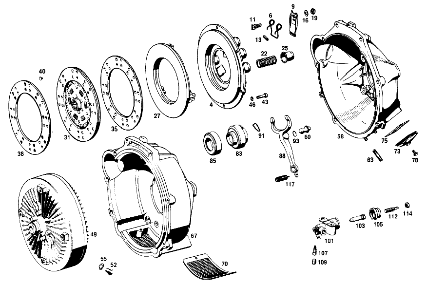

| № | Артикул | Название | Кол. | Примечание | Ограничение |
|---|---|---|---|---|---|
| 4 | A 000 250 96 04 | Нажимная пластина | 1 | Коробка передач [001] NOT FOR USE WITH MERCEDES-BENZ HYDRAULIC-AUTOMATIC CLUTCH [697] ДЕТАЛЬ ПОСТАВЛЯЕТСЯ ТОЛЬКО/ИЛИ ТАКЖЕ КАК ЗАП.ЧАСТЬ | |
| 6 | A 000 252 04 27 | - Пружина кручения | 3 | Коробка передач [001] NOT FOR USE WITH MERCEDES-BENZ HYDRAULIC-AUTOMATIC CLUTCH | |
| 9 | A 000 252 42 13 | - Выжимной рычаг | 3 | Коробка передач [001] NOT FOR USE WITH MERCEDES-BENZ HYDRAULIC-AUTOMATIC CLUTCH | |
| 11 | A 000 252 03 74 | - Палец | 3 | Коробка передач [001] NOT FOR USE WITH MERCEDES-BENZ HYDRAULIC-AUTOMATIC CLUTCH | |
| 13 | N 001481 006002 | - Распорный штифт | 3 | Коробка передач [001] NOT FOR USE WITH MERCEDES-BENZ HYDRAULIC-AUTOMATIC CLUTCH | |
| 16 | A 000 252 01 51 | - ДИСТАНЦИОННОЕ КОЛЬЦО | 3 | Коробка передач [001] NOT FOR USE WITH MERCEDES-BENZ HYDRAULIC-AUTOMATIC CLUTCH | |
| 19 | A 000 252 14 72 | - ГАЙКА | - | Коробка передач | |
| 19 | A 000 252 27 72 | - гайка | 3 | Коробка передач [001] NOT FOR USE WITH MERCEDES-BENZ HYDRAULIC-AUTOMATIC CLUTCH | |
| 22 | A 000 252 18 20 | - Нажимная пружина | 9 | 55mm Коробка передач [001] NOT FOR USE WITH MERCEDES-BENZ HYDRAULIC-AUTOMATIC CLUTCH | |
| 25 | A 000 252 03 35 | - ВТУЛКА | 9 | Коробка передач [001] NOT FOR USE WITH MERCEDES-BENZ HYDRAULIC-AUTOMATIC CLUTCH | |
| 27 | A 000 252 21 06 | - ШАЙБА УПОРНАЯ | 1 | Коробка передач [417] БОЛЬШЕ НЕ ПОСТАВЛЯЕТСЯ, ЗАКАЗЫВАТЬ КОМПЛЕКТ ПОСТАВКИ [001] NOT FOR USE WITH MERCEDES-BENZ HYDRAULIC-AUTOMATIC CLUTCH | |
| 31 | A 010 250 26 03 | Ведомый диск сцепления | 1 | Коробка передач [001] NOT FOR USE WITH MERCEDES-BENZ HYDRAULIC-AUTOMATIC CLUTCH [697] ДЕТАЛЬ ПОСТАВЛЯЕТСЯ ТОЛЬКО/ИЛИ ТАКЖЕ КАК ЗАП.ЧАСТЬ | |
| 35 | A 000 252 19 10 | - НАКЛАДКА СЦЕПЛ. ФРИКЦ. | - | Коробка передач | |
| 35 | A 108 586 00 25 | - РЕМКОМПЛЕКТ | - | СТОРОНА СЦЕПЛЕНИЯ Коробка передач [001] NOT FOR USE WITH MERCEDES-BENZ HYDRAULIC-AUTOMATIC CLUTCH [004] ПО ОТДЕЛЬНОСТИ БОЛЬШЕ НЕ ПОСТАВЛЯЕТСЯ | |
| 38 | A 000 252 21 10 | - НАКЛАДКА СЦЕПЛ. ФРИКЦ. | - | ON FLYWHEEL END Коробка передач [001] NOT FOR USE WITH MERCEDES-BENZ HYDRAULIC-AUTOMATIC CLUTCH [402] БОЛЬШЕ НЕ ПОСТАВЛЯЕТСЯ [004] ПО ОТДЕЛЬНОСТИ БОЛЬШЕ НЕ ПОСТАВЛЯЕТСЯ | |
| 40 | A 000 252 10 75 | - ЗАКЛЕПКА | - | Коробка передач [417] БОЛЬШЕ НЕ ПОСТАВЛЯЕТСЯ, ЗАКАЗЫВАТЬ КОМПЛЕКТ ПОСТАВКИ [001] NOT FOR USE WITH MERCEDES-BENZ HYDRAULIC-AUTOMATIC CLUTCH [004] ПО ОТДЕЛЬНОСТИ БОЛЬШЕ НЕ ПОСТАВЛЯЕТСЯ | |
| 43 | N 000912 008012 | Винт | 6 | Коробка передач [001] NOT FOR USE WITH MERCEDES-BENZ HYDRAULIC-AUTOMATIC CLUTCH | |
| 46 | N 007980 008002 | Пружинное кольцо | 6 | Коробка передач [001] NOT FOR USE WITH MERCEDES-BENZ HYDRAULIC-AUTOMATIC CLUTCH | |
| 49 | A 111 250 16 02 | ГИДР.СЦЕПЛЕНИЕ | 1 | Автоматическая коробка переключения передач [001] NOT FOR USE WITH MERCEDES-BENZ HYDRAULIC-AUTOMATIC CLUTCH | |
| 52 | A 180 997 05 30 | - Резьбовая пробка | 1 | OIL FILLING OR OIL DRAIN Автоматическая коробка переключения передач [001] NOT FOR USE WITH MERCEDES-BENZ HYDRAULIC-AUTOMATIC CLUTCH | |
| 55 | N 007603 012104 | - Уплотнительное кольцо | 1 | OIL FILLING OR OIL DRAIN Автоматическая коробка переключения передач [001] NOT FOR USE WITH MERCEDES-BENZ HYDRAULIC-AUTOMATIC CLUTCH | |
| 58 | A 111 250 20 05 | КОРПУС | 1 | Коробка передач [001] NOT FOR USE WITH MERCEDES-BENZ HYDRAULIC-AUTOMATIC CLUTCH [006] FROM TRANSMISSION 230592 | |
| 60 | A 111 991 01 20 | - ЦАПФА СФЕРИЧЕСКАЯ | 1 | для RELEASE YOKE Коробка передач [001] NOT FOR USE WITH MERCEDES-BENZ HYDRAULIC-AUTOMATIC CLUTCH [005] UP TO TRANSMISSION 230591 | |
| 63 | N 000835 008062 | - Винт | 2 | Коробка передач [001] NOT FOR USE WITH MERCEDES-BENZ HYDRAULIC-AUTOMATIC CLUTCH [008] 010 FROM CHASSIS 048977;012 FROM CHASSIS 108750 | |
| 67 | A 111 250 22 05 | КОРПУС | 1 | для HYDRAULIC CLUTCH Автоматическая коробка переключения передач [001] NOT FOR USE WITH MERCEDES-BENZ HYDRAULIC-AUTOMATIC CLUTCH | |
| 70 | A 112 257 05 90 | - КОЖУХ | 1 | для AIR OUTLET Автоматическая коробка переключения передач [001] NOT FOR USE WITH MERCEDES-BENZ HYDRAULIC-AUTOMATIC CLUTCH | |
| 73 | A 120 254 00 97 | Манжета | 1 | Коробка передач [001] NOT FOR USE WITH MERCEDES-BENZ HYDRAULIC-AUTOMATIC CLUTCH | |
| 75 | A 120 254 00 58 | Кронштейн уплотнителя | 1 | МАНЖЕТА НА КАРТЕРЕ СЦЕПЛЕНИЯ Коробка передач [001] NOT FOR USE WITH MERCEDES-BENZ HYDRAULIC-AUTOMATIC CLUTCH | |
| 78 | N 000933 006103 | Винт | - | Коробка передач | |
| 78 | N 304017 006018 | Винт с 6-гранной головкой | 4 | МАНЖЕТА НА КАРТЕРЕ СЦЕПЛЕНИЯ; M6X12 Коробка передач [001] NOT FOR USE WITH MERCEDES-BENZ HYDRAULIC-AUTOMATIC CLUTCH | |
| 83 | A 111 250 01 15 | Выжимной подшипник | 1 | с RELEASE BODY Коробка передач [001] NOT FOR USE WITH MERCEDES-BENZ HYDRAULIC-AUTOMATIC CLUTCH | |
| 85 | A 000 981 43 25 | - ШАРИКОПОДШИПНИК | 1 | Коробка передач [001] NOT FOR USE WITH MERCEDES-BENZ HYDRAULIC-AUTOMATIC CLUTCH [012] 010 FROM CHASSIS 056243;012 FROM CHASSIS 122526 | |
| 88 | A 111 293 02 11 | Вилка выкл. сцепления | 1 | Коробка передач [001] NOT FOR USE WITH MERCEDES-BENZ HYDRAULIC-AUTOMATIC CLUTCH | |
| 91 | A 319 993 00 25 | пружина | 2 | RELEASE YOKE TO RELEASE BODY Коробка передач [001] NOT FOR USE WITH MERCEDES-BENZ HYDRAULIC-AUTOMATIC CLUTCH | |
| 93 | N 071805 016301 | Пруж. стопорное кольцо | 1 | RELEASE YOKE TO BALL PIN Коробка передач [001] NOT FOR USE WITH MERCEDES-BENZ HYDRAULIC-AUTOMATIC CLUTCH | |
| 101 | A 000 295 19 07 | Рабочий цилиндр | 1 | Коробка передач [001] NOT FOR USE WITH MERCEDES-BENZ HYDRAULIC-AUTOMATIC CLUTCH [008] 010 FROM CHASSIS 048977;012 FROM CHASSIS 108750 | |
| 103 | A 000 295 03 74 | - Палец | 1 | Коробка передач [001] NOT FOR USE WITH MERCEDES-BENZ HYDRAULIC-AUTOMATIC CLUTCH | |
| 105 | A 000 295 05 83 | - Манжета | 1 | Коробка передач [001] NOT FOR USE WITH MERCEDES-BENZ HYDRAULIC-AUTOMATIC CLUTCH | |
| 107 | A 000 295 01 20 | - КЛАПАН | 1 | Коробка передач [001] NOT FOR USE WITH MERCEDES-BENZ HYDRAULIC-AUTOMATIC CLUTCH | |
| 109 | A 000 421 71 87 | - КОЛПАЧОК | - | Коробка передач | |
| 109 | A 000 421 08 87 | - Защитный колпачок | 1 | Коробка передач [001] NOT FOR USE WITH MERCEDES-BENZ HYDRAULIC-AUTOMATIC CLUTCH | |
| 112 | A 111 295 07 33 | Нажимная штанга | 1 | Коробка передач [001] NOT FOR USE WITH MERCEDES-BENZ HYDRAULIC-AUTOMATIC CLUTCH [014] 010 FROM ENGINE 004320;012 FROM ENGINE 009090 | |
| 114 | N 000439 008211 | Гайка | - | Коробка передач | |
| 114 | N 304035 008001 | Шестигранная гайка | 1 | M8 Коробка передач [001] NOT FOR USE WITH MERCEDES-BENZ HYDRAULIC-AUTOMATIC CLUTCH | |
| 117 | A 111 993 11 10 | пружина | 1 | для RELEASE YOKE Коробка передач [001] NOT FOR USE WITH MERCEDES-BENZ HYDRAULIC-AUTOMATIC CLUTCH [008] 010 FROM CHASSIS 048977;012 FROM CHASSIS 108750 | |
| 120 | A 111 250 06 02 | ГИДР.СЦЕПЛЕНИЕ | 1 | с DRIVE PLATE Коробка передач [010] ONLY FOR USE WITH MERCEDES-BENZ HYDRAULIC-AUTOMATIC CLUTCH | |
| 123 | A 180 997 05 30 | - Резьбовая пробка | 2 | Коробка передач [010] ONLY FOR USE WITH MERCEDES-BENZ HYDRAULIC-AUTOMATIC CLUTCH | |
| 126 | A 111 994 01 15 | - ПРЕДОХРАНИТЕЛЬ | 1 | DRIVE PLATE TO FLANGE SHAFT Коробка передач [010] ONLY FOR USE WITH MERCEDES-BENZ HYDRAULIC-AUTOMATIC CLUTCH | |
| 129 | A 127 990 00 60 | - ГАЙКА | 1 | DRIVE PLATE TO FLANGE SHAFT Коробка передач [010] ONLY FOR USE WITH MERCEDES-BENZ HYDRAULIC-AUTOMATIC CLUTCH | |
| 131 | A 180 250 02 04 | ДИСК НАЖИМНОЙ | 1 | Коробка передач [010] ONLY FOR USE WITH MERCEDES-BENZ HYDRAULIC-AUTOMATIC CLUTCH | |
| 133 | A 000 252 06 27 | - ПРУЖИНА ДВОЙНАЯ | 3 | Коробка передач [402] БОЛЬШЕ НЕ ПОСТАВЛЯЕТСЯ [010] ONLY FOR USE WITH MERCEDES-BENZ HYDRAULIC-AUTOMATIC CLUTCH | |
| 135 | A 000 252 12 13 | - ВОЗВРАТН. РЫЧАГ | 3 | Коробка передач [010] ONLY FOR USE WITH MERCEDES-BENZ HYDRAULIC-AUTOMATIC CLUTCH | |
| 137 | A 000 252 03 74 | - Палец | 3 | Коробка передач [010] ONLY FOR USE WITH MERCEDES-BENZ HYDRAULIC-AUTOMATIC CLUTCH | |
| 140 | A 000 252 01 51 | - ДИСТАНЦИОННОЕ КОЛЬЦО | 3 | Коробка передач [010] ONLY FOR USE WITH MERCEDES-BENZ HYDRAULIC-AUTOMATIC CLUTCH | |
| 142 | A 000 252 14 72 | - ГАЙКА | - | Коробка передач | |
| 142 | A 000 252 27 72 | - гайка | 3 | Коробка передач [010] ONLY FOR USE WITH MERCEDES-BENZ HYDRAULIC-AUTOMATIC CLUTCH | |
| 145 | A 136 252 00 24 | - ШАЙБА ИЗОЛЯЦИОННАЯ | 9 | Коробка передач [402] БОЛЬШЕ НЕ ПОСТАВЛЯЕТСЯ [010] ONLY FOR USE WITH MERCEDES-BENZ HYDRAULIC-AUTOMATIC CLUTCH | |
| 147 | A 000 252 19 20 | - ПРУЖИНА НАЖИМНАЯ | - | Коробка передач | |
| 147 | A 000 252 69 20 | - ПРУЖИНА НАЖИМНАЯ | 3 | 44 MM Коробка передач [010] ONLY FOR USE WITH MERCEDES-BENZ HYDRAULIC-AUTOMATIC CLUTCH | |
| 150 | A 000 252 20 20 | - ПРУЖИНА НАЖИМНАЯ | 6 | 45 MM Коробка передач [010] ONLY FOR USE WITH MERCEDES-BENZ HYDRAULIC-AUTOMATIC CLUTCH | |
| 152 | A 000 252 00 35 | - ВТУЛКА | 9 | Коробка передач [402] БОЛЬШЕ НЕ ПОСТАВЛЯЕТСЯ [010] ONLY FOR USE WITH MERCEDES-BENZ HYDRAULIC-AUTOMATIC CLUTCH | |
| 154 | A 000 252 11 06 | - ШАЙБА УПОРНАЯ | 1 | Коробка передач [417] БОЛЬШЕ НЕ ПОСТАВЛЯЕТСЯ, ЗАКАЗЫВАТЬ КОМПЛЕКТ ПОСТАВКИ [402] БОЛЬШЕ НЕ ПОСТАВЛЯЕТСЯ [010] ONLY FOR USE WITH MERCEDES-BENZ HYDRAULIC-AUTOMATIC CLUTCH | |
| 156 | A 000 252 02 29 | - СКОБА | 3 | Коробка передач [010] ONLY FOR USE WITH MERCEDES-BENZ HYDRAULIC-AUTOMATIC CLUTCH | |
| 158 | A 000 252 02 28 | - ДИСК НАЖИМНОЙ | 1 | Коробка передач [010] ONLY FOR USE WITH MERCEDES-BENZ HYDRAULIC-AUTOMATIC CLUTCH | |
| 161 | A 180 250 01 03 | ДИСК СЦЕПЛЕНИЯ | - | Коробка передач | |
| 161 | A 010 250 53 03 | ДИСК СЦЕПЛЕНИЯ | 1 | Коробка передач [010] ONLY FOR USE WITH MERCEDES-BENZ HYDRAULIC-AUTOMATIC CLUTCH | |
| 163 | A 180 252 02 10 | - НАКЛАДКА СЦЕПЛ. ФРИКЦ. | 1 | ON FLYWHEEL END Коробка передач [402] БОЛЬШЕ НЕ ПОСТАВЛЯЕТСЯ [010] ONLY FOR USE WITH MERCEDES-BENZ HYDRAULIC-AUTOMATIC CLUTCH | |
| 165 | A 180 252 01 10 | - НАКЛАДКА СЦЕПЛ. ФРИКЦ. | 1 | СТОРОНА СЦЕПЛЕНИЯ Коробка передач [402] БОЛЬШЕ НЕ ПОСТАВЛЯЕТСЯ [010] ONLY FOR USE WITH MERCEDES-BENZ HYDRAULIC-AUTOMATIC CLUTCH | |
| 167 | A 000 252 12 75 | - ЗАКЛЕПКА | 16 | Коробка передач [010] ONLY FOR USE WITH MERCEDES-BENZ HYDRAULIC-AUTOMATIC CLUTCH | |
| 171 | A 111 257 03 01 | КОРПУС | 1 | Коробка передач [010] ONLY FOR USE WITH MERCEDES-BENZ HYDRAULIC-AUTOMATIC CLUTCH | |
| 173 | A 111 254 00 07 | ВАЛ | 1 | Коробка передач [010] ONLY FOR USE WITH MERCEDES-BENZ HYDRAULIC-AUTOMATIC CLUTCH | |
| 175 | N 000625 106203 | Шарикоподшипник | 1 | Коробка передач [010] ONLY FOR USE WITH MERCEDES-BENZ HYDRAULIC-AUTOMATIC CLUTCH | |
| 177 | N 005412 200203 | ПОДШ. С ЦИЛ. РОЛИКАМИ | 1 | Коробка передач [010] ONLY FOR USE WITH MERCEDES-BENZ HYDRAULIC-AUTOMATIC CLUTCH | |
| 179 | N 000472 040000 | Стопорное кольцо | - | Коробка передач | |
| 179 | A 000 994 92 41 | СТОПОРНОЕ КОЛЬЦО | 4 | GROOVED BALL BEARING AND CYLINDRICAL ROLLER BEARING TO BELL HOUSING Коробка передач [010] ONLY FOR USE WITH MERCEDES-BENZ HYDRAULIC-AUTOMATIC CLUTCH | |
| 181 | A 180 254 00 89 | КОЖУХ | 2 | GROOVED BALL BEARING AND CYLINDRICAL ROLLER BEARING TO BELL HOUSING Коробка передач [402] БОЛЬШЕ НЕ ПОСТАВЛЯЕТСЯ [010] ONLY FOR USE WITH MERCEDES-BENZ HYDRAULIC-AUTOMATIC CLUTCH | |
| 183 | A 180 250 02 13 | ВОЗВРАТН. РЫЧАГ | 1 | Коробка передач [010] ONLY FOR USE WITH MERCEDES-BENZ HYDRAULIC-AUTOMATIC CLUTCH | |
| 185 | A 110 254 00 50 | ВТУЛКА | 1 | Коробка передач [402] БОЛЬШЕ НЕ ПОСТАВЛЯЕТСЯ [010] ONLY FOR USE WITH MERCEDES-BENZ HYDRAULIC-AUTOMATIC CLUTCH | |
| 187 | A 094 987 16 00 | Кольцевая прокладка | 2 | Коробка передач [010] ONLY FOR USE WITH MERCEDES-BENZ HYDRAULIC-AUTOMATIC CLUTCH | |
| 190 | A 180 990 00 53 | ГАЙКА | 2 | Коробка передач [010] ONLY FOR USE WITH MERCEDES-BENZ HYDRAULIC-AUTOMATIC CLUTCH | |
| 192 | A 121 993 02 10 | ПРУЖИНА | 1 | для RELEASE LEVER Коробка передач [010] ONLY FOR USE WITH MERCEDES-BENZ HYDRAULIC-AUTOMATIC CLUTCH | |
| 194 | A 180 258 07 40 | ДЕРЖАТЕЛЬ | 1 | ДЛЯ ВОЗВРАТНОЙ ПРУЖИНЫ Коробка передач [010] ONLY FOR USE WITH MERCEDES-BENZ HYDRAULIC-AUTOMATIC CLUTCH | |
| 197 | A 180 257 12 90 | КОЖУХ | 1 | Коробка передач | |
| 199 | A 111 257 02 90 | КОЖУХ | 1 | Коробка передач | |
| 202 | A 111 250 02 56 | ЗАЩИТНАЯ ПАНЕЛЬ | 1 | для TEMPERATURE SWITCH Коробка передач | |
| 204 | A 000 542 79 17 | ДАТЧИК | 1 | РЕЛЕ ТЕМПЕРАТУРЫ Коробка передач | |
| 206 | A 128 257 06 40 | ДЕРЖАТЕЛЬ | 1 | TEMPERATURE SWITCH TO PROTECTIVE PLATE Коробка передач | |
| 208 | A 180 257 05 90 | КОЖУХ | 1 | для FILLER OPENING Коробка передач | |
| 211 | A 111 257 10 90 | КОЖУХ | 1 | Коробка передач [402] БОЛЬШЕ НЕ ПОСТАВЛЯЕТСЯ | |
| 214 | A 128 257 00 90 | КОЖУХ | 1 | Коробка передач [402] БОЛЬШЕ НЕ ПОСТАВЛЯЕТСЯ | |
| 216 | A 000 250 02 17 | КОЛЬЦО КОНТАКТНОЕ | 1 | Коробка передач | |
| 221 | A 000 254 02 94 | - ФАСОННАЯ ПРУЖИНА | 2 | Коробка передач | |
| 223 | A 111 250 02 43 | ДЕРЖАТЕЛЬ | 1 | Коробка передач [010] ONLY FOR USE WITH MERCEDES-BENZ HYDRAULIC-AUTOMATIC CLUTCH | |
| 224 | A 000 258 06 01 | СЕРВОМОТОР | 1 | Коробка передач [010] ONLY FOR USE WITH MERCEDES-BENZ HYDRAULIC-AUTOMATIC CLUTCH | |
| 227 | A 000 545 45 11 | ВЫКЛЮЧАТЕЛЬ | 1 | Коробка передач [010] ONLY FOR USE WITH MERCEDES-BENZ HYDRAULIC-AUTOMATIC CLUTCH | |
| 229 | A 111 250 03 32 | ТЯГА | 1 | Коробка передач [010] ONLY FOR USE WITH MERCEDES-BENZ HYDRAULIC-AUTOMATIC CLUTCH | |
| 233 | A 000 250 03 60 | УПРАВЛЯЮЩИЙ КЛАПАН | 1 | Коробка передач [010] ONLY FOR USE WITH MERCEDES-BENZ HYDRAULIC-AUTOMATIC CLUTCH [018] 010 FROM CHASSIS 002370;012 FROM CHASSIS 003039 | |
| 234 | A 000 257 00 88 | - MAГНИТ | 1 | Коробка передач [010] ONLY FOR USE WITH MERCEDES-BENZ HYDRAULIC-AUTOMATIC CLUTCH | |
| 236 | A 000 257 01 67 | - ФИЛЬТР | 1 | Коробка передач [010] ONLY FOR USE WITH MERCEDES-BENZ HYDRAULIC-AUTOMATIC CLUTCH | |
| 238 | A 000 257 02 34 | - КЛАПАН | 1 | Коробка передач [402] БОЛЬШЕ НЕ ПОСТАВЛЯЕТСЯ [010] ONLY FOR USE WITH MERCEDES-BENZ HYDRAULIC-AUTOMATIC CLUTCH | |
| 240 | A 001 993 02 01 | - ПРУЖИНА | 1 | Коробка передач [402] БОЛЬШЕ НЕ ПОСТАВЛЯЕТСЯ [010] ONLY FOR USE WITH MERCEDES-BENZ HYDRAULIC-AUTOMATIC CLUTCH | |
| 242 | A 000 257 03 34 | - КЛАПАН | 1 | Коробка передач [402] БОЛЬШЕ НЕ ПОСТАВЛЯЕТСЯ [010] ONLY FOR USE WITH MERCEDES-BENZ HYDRAULIC-AUTOMATIC CLUTCH | |
| 244 | A 110 258 03 40 | ДЕРЖАТЕЛЬ | 1 | для CONTROL VALVE Коробка передач [010] ONLY FOR USE WITH MERCEDES-BENZ HYDRAULIC-AUTOMATIC CLUTCH | |
| 247 | A 000 997 31 81 | Проходная втулка | 3 | CONTROL VALVE TO SUPPORT Коробка передач [010] ONLY FOR USE WITH MERCEDES-BENZ HYDRAULIC-AUTOMATIC CLUTCH | |
| 249 | A 180 991 12 40 | РАСПОРН. ТРУБКА | 3 | CONTROL VALVE TO SUPPORT Коробка передач [010] ONLY FOR USE WITH MERCEDES-BENZ HYDRAULIC-AUTOMATIC CLUTCH | |
| 251 | A 180 990 10 40 | ШАЙБА | 6 | Коробка передач [010] ONLY FOR USE WITH MERCEDES-BENZ HYDRAULIC-AUTOMATIC CLUTCH | |
| 253 | A 111 250 00 23 | ВАКУУМНЫЙ РЕЗЕРВУАР | 1 | с SUPPORT Коробка передач [010] ONLY FOR USE WITH MERCEDES-BENZ HYDRAULIC-AUTOMATIC CLUTCH | |
| 256 | A 000 435 21 82 | Шланг | 1 | FROM CONTROL VALVE TO VACUUM TANK 800 MM Коробка передач [010] ONLY FOR USE WITH MERCEDES-BENZ HYDRAULIC-AUTOMATIC CLUTCH [404] ЗАКАЗЫВАТЬ ПОГОННЫМИ МЕТРАМИ | |
| 256 | A 000 435 21 82 | Шланг | 1 | FROM CONTROL VALVE TO INTAKE MANIFOLD 580 MM Коробка передач [010] ONLY FOR USE WITH MERCEDES-BENZ HYDRAULIC-AUTOMATIC CLUTCH [017] 010 UP TO CHASSIS 002369;012 UP TO CHASSIS 003038 | |
| 258 | A 000 435 22 82 | ШЛАНГ | 1 | FROM CONTROL VALVE TO SERVO UNIT 260mm Коробка передач [010] ONLY FOR USE WITH MERCEDES-BENZ HYDRAULIC-AUTOMATIC CLUTCH [404] ЗАКАЗЫВАТЬ ПОГОННЫМИ МЕТРАМИ | |
| 258 | A 000 435 22 82 | ШЛАНГ | 1 | FROM CONTROL VALVE TO INTAKE MANIFOLD 580 MM Коробка передач [010] ONLY FOR USE WITH MERCEDES-BENZ HYDRAULIC-AUTOMATIC CLUTCH [018] 010 FROM CHASSIS 002370;012 FROM CHASSIS 003039 | |
| 261 | A 180 997 17 72 | ШТУЦЕР | 1 | VACUUM CONNECTION TO INTAKE MANIFOLD Коробка передач [010] ONLY FOR USE WITH MERCEDES-BENZ HYDRAULIC-AUTOMATIC CLUTCH | |
| A 000 252 16 10 | - НАКЛАДКА СЦЕПЛ. ФРИКЦ. | 2 | Коробка передач [001] NOT FOR USE WITH MERCEDES-BENZ HYDRAULIC-AUTOMATIC CLUTCH [402] БОЛЬШЕ НЕ ПОСТАВЛЯЕТСЯ [004] ПО ОТДЕЛЬНОСТИ БОЛЬШЕ НЕ ПОСТАВЛЯЕТСЯ | ||
| A 000 252 12 75 | - ЗАКЛЕПКА | 35 | Коробка передач [001] NOT FOR USE WITH MERCEDES-BENZ HYDRAULIC-AUTOMATIC CLUTCH | ||
| A 115 586 00 25 | РЕМКОМПЛЕКТ | 1 | Коробка передач [001] NOT FOR USE WITH MERCEDES-BENZ HYDRAULIC-AUTOMATIC CLUTCH [402] БОЛЬШЕ НЕ ПОСТАВЛЯЕТСЯ [002] TO 128 250 00 03,000 250 43 03,000 250 55 03 CLUTCH PLATES | ||
| A 108 586 00 25 | РЕМКОМПЛЕКТ | 1 | Коробка передач [001] NOT FOR USE WITH MERCEDES-BENZ HYDRAULIC-AUTOMATIC CLUTCH [003] TO 000 250 72 03,000 250 87 03,001 250 11 03,001 250 88 03,002 250 16 03,002 250 28 03,002 250 60 03 CLUTCH PLATES | ||
| N 007603 010100 | - Уплотнительное кольцо | 1 | OIL FILLING OR OIL DRAIN; 10X13.5 AL Автоматическая коробка переключения передач [001] NOT FOR USE WITH MERCEDES-BENZ HYDRAULIC-AUTOMATIC CLUTCH [019] FROM TRANSMISSION 047301-047485,FROM TRANSMISSION 049156 | ||
| A 111 250 05 05 | КОРПУС | - | Коробка передач [001] NOT FOR USE WITH MERCEDES-BENZ HYDRAULIC-AUTOMATIC CLUTCH [005] UP TO TRANSMISSION 230591 | ||
| N 000835 008008 | - Шпилька | 2 | Коробка передач [001] NOT FOR USE WITH MERCEDES-BENZ HYDRAULIC-AUTOMATIC CLUTCH [007] 010 UP TO CHASSIS 048976;012 UP TO CHASSIS 108749 | ||
| N 000933 006102 | - Винт | - | Автоматическая коробка переключения передач | ||
| N 304017 006016 | - Винт с 6-гранной головкой | 2 | ЗАЩИТНЫЙ ЩИТОК К КОРПУСУ; M6X16 Автоматическая коробка переключения передач [001] NOT FOR USE WITH MERCEDES-BENZ HYDRAULIC-AUTOMATIC CLUTCH | ||
| N 000137 006204 | - Пружинная шайба | 2 | ЗАЩИТНЫЙ ЩИТОК К КОРПУСУ Автоматическая коробка переключения передач [001] NOT FOR USE WITH MERCEDES-BENZ HYDRAULIC-AUTOMATIC CLUTCH | ||
| A 120 251 00 71 | БОЛТ | 1 | Коробка передач [001] NOT FOR USE WITH MERCEDES-BENZ HYDRAULIC-AUTOMATIC CLUTCH [402] БОЛЬШЕ НЕ ПОСТАВЛЯЕТСЯ [009] 010 UP TO CHASSIS 000646;012 UP TO CHASSIS 001036 | ||
| N 000931 012132 | Винт | 4 | КАРТЕР СЦЕПЛЕНИЯ НА КАРТЕРЕ КП Коробка передач [001] NOT FOR USE WITH MERCEDES-BENZ HYDRAULIC-AUTOMATIC CLUTCH | ||
| N 000931 012132 | Винт | 3 | Коробка передач [010] ONLY FOR USE WITH MERCEDES-BENZ HYDRAULIC-AUTOMATIC CLUTCH | ||
| N 000931 012179 | Винт | 1 | КАРТЕР СЦЕПЛЕНИЯ НА КАРТЕРЕ КП Автоматическая коробка переключения передач [010] ONLY FOR USE WITH MERCEDES-BENZ HYDRAULIC-AUTOMATIC CLUTCH | ||
| N 000931 012179 | Винт | 4 | Автоматическая коробка переключения передач | ||
| N 000125 013003 | ШАЙБА | 4 | КАРТЕР СЦЕПЛЕНИЯ НА КАРТЕРЕ КП Коробка передач | ||
| N 912004 012100 | Пружинное кольцо | 4 | КАРТЕР СЦЕПЛЕНИЯ НА КАРТЕРЕ КП Коробка передач | ||
| N 000137 012203 | Пружинная шайба | - | Автоматическая коробка переключения передач | ||
| A 094 990 42 05 | Пружинная шайба | 4 | КАРТЕР СЦЕПЛЕНИЯ НА КАРТЕРЕ КП Автоматическая коробка переключения передач [001] NOT FOR USE WITH MERCEDES-BENZ HYDRAULIC-AUTOMATIC CLUTCH | ||
| N 000934 012021 | Гайка | 4 | КАРТЕР СЦЕПЛЕНИЯ НА КАРТЕРЕ КП Коробка передач | ||
| N 000934 012021 | Гайка | 2 | Автоматическая коробка переключения передач [001] NOT FOR USE WITH MERCEDES-BENZ HYDRAULIC-AUTOMATIC CLUTCH | ||
| N 000933 008154 | Винт | - | Коробка передач | ||
| N 304017 008021 | Винт с 6-гранной головкой | 2 | КАРТЕР СЦЕПЛЕНИЯ НА КАРТЕРЕ КП; M8X20 Коробка передач | ||
| N 000137 008204 | Пружинная шайба | - | Коробка передач | ||
| N 000137 008212 | Пружинная шайба | 2 | КАРТЕР СЦЕПЛЕНИЯ НА КАРТЕРЕ КП Коробка передач | ||
| A 111 250 02 15 | ПОДШИПНИК ВЫЖИМНОЙ | 1 | с RELEASE BODY Коробка передач [001] NOT FOR USE WITH MERCEDES-BENZ HYDRAULIC-AUTOMATIC CLUTCH | ||
| A 127 254 01 20 | - ПОДШИПНИК ВЫЖИМНОЙ | - | Коробка передач | ||
| A 111 250 01 15 | - Выжимной подшипник | 1 | Коробка передач [001] NOT FOR USE WITH MERCEDES-BENZ HYDRAULIC-AUTOMATIC CLUTCH [011] 010 UP TO CHASSIS 056242;012 UP TO CHASSIS 122525 | ||
| A 001 981 52 25 | - ШАРИКОПОДШИПНИК | 1 | Коробка передач [001] NOT FOR USE WITH MERCEDES-BENZ HYDRAULIC-AUTOMATIC CLUTCH [012] 010 FROM CHASSIS 056243;012 FROM CHASSIS 122526 | ||
| A 000 295 03 07 | РАБОЧИЙ ЦИЛИНДР | - | Коробка передач [001] NOT FOR USE WITH MERCEDES-BENZ HYDRAULIC-AUTOMATIC CLUTCH [013] 010 UP TO ENGINE 004319;012 UP TO ENGINE 009089 | ||
| A 000 295 08 07 | РАБОЧИЙ ЦИЛИНДР | 1 | Коробка передач [001] NOT FOR USE WITH MERCEDES-BENZ HYDRAULIC-AUTOMATIC CLUTCH [007] 010 UP TO CHASSIS 048976;012 UP TO CHASSIS 108749 [014] 010 FROM ENGINE 004320;012 FROM ENGINE 009090 | ||
| A 000 295 01 30 | - ПОРШЕНЬ | - | Коробка передач [001] NOT FOR USE WITH MERCEDES-BENZ HYDRAULIC-AUTOMATIC CLUTCH [402] БОЛЬШЕ НЕ ПОСТАВЛЯЕТСЯ | ||
| A 000 295 03 30 | - ПОРШЕНЬ | - | Коробка передач [001] NOT FOR USE WITH MERCEDES-BENZ HYDRAULIC-AUTOMATIC CLUTCH [402] БОЛЬШЕ НЕ ПОСТАВЛЯЕТСЯ | ||
| A 000 295 00 74 | - БОЛТ | - | Коробка передач [001] NOT FOR USE WITH MERCEDES-BENZ HYDRAULIC-AUTOMATIC CLUTCH | ||
| A 000 295 01 74 | - БОЛТ | 1 | TO 000 295 04 07 Коробка передач [417] БОЛЬШЕ НЕ ПОСТАВЛЯЕТСЯ, ЗАКАЗЫВАТЬ КОМПЛЕКТ ПОСТАВКИ [001] NOT FOR USE WITH MERCEDES-BENZ HYDRAULIC-AUTOMATIC CLUTCH | ||
| A 000 295 03 74 | - Палец | 1 | TO 000 295 05 07,000 295 08 07 Коробка передач [001] NOT FOR USE WITH MERCEDES-BENZ HYDRAULIC-AUTOMATIC CLUTCH | ||
| A 000 295 01 83 | - МАНЖЕТА | - | Коробка передач [001] NOT FOR USE WITH MERCEDES-BENZ HYDRAULIC-AUTOMATIC CLUTCH | ||
| A 000 295 08 83 | - МАНЖЕТА | 1 | TO 000 295 04 07 Коробка передач [001] NOT FOR USE WITH MERCEDES-BENZ HYDRAULIC-AUTOMATIC CLUTCH | ||
| A 000 295 05 83 | - Манжета | 1 | TO 000 295 05 07,000 295 08 07 Коробка передач [001] NOT FOR USE WITH MERCEDES-BENZ HYDRAULIC-AUTOMATIC CLUTCH | ||
| A 000 295 01 20 | - КЛАПАН | 1 | Коробка передач [001] NOT FOR USE WITH MERCEDES-BENZ HYDRAULIC-AUTOMATIC CLUTCH | ||
| A 000 421 71 87 | - КОЛПАЧОК | - | Коробка передач | ||
| A 000 421 08 87 | - Защитный колпачок | 1 | Коробка передач [001] NOT FOR USE WITH MERCEDES-BENZ HYDRAULIC-AUTOMATIC CLUTCH | ||
| A 000 586 04 29 | РЕМКОМПЛЕКТ | 1 | TO 000 295 03 07,000 295 04 07 Коробка передач [001] NOT FOR USE WITH MERCEDES-BENZ HYDRAULIC-AUTOMATIC CLUTCH | ||
| A 000 586 08 29 | РЕМКОМПЛЕКТ | 1 | TO 000 295 05 07,000 295 08 07 Коробка передач [001] NOT FOR USE WITH MERCEDES-BENZ HYDRAULIC-AUTOMATIC CLUTCH | ||
| A 000 586 09 29 | ремкомплект | 1 | TO 000 295 16 07 Коробка передач [001] NOT FOR USE WITH MERCEDES-BENZ HYDRAULIC-AUTOMATIC CLUTCH [008] 010 FROM CHASSIS 048977;012 FROM CHASSIS 108750 | ||
| A 111 295 05 33 | ТЯГА | - | Коробка передач [001] NOT FOR USE WITH MERCEDES-BENZ HYDRAULIC-AUTOMATIC CLUTCH [013] 010 UP TO ENGINE 004319;012 UP TO ENGINE 009089 | ||
| A 111 993 06 10 | ПРУЖИНА | 1 | Коробка передач [001] NOT FOR USE WITH MERCEDES-BENZ HYDRAULIC-AUTOMATIC CLUTCH [013] 010 UP TO ENGINE 004319;012 UP TO ENGINE 009089 | ||
| A 111 993 10 10 | пружина | 1 | для RELEASE YOKE Коробка передач [001] NOT FOR USE WITH MERCEDES-BENZ HYDRAULIC-AUTOMATIC CLUTCH [007] 010 UP TO CHASSIS 048976;012 UP TO CHASSIS 108749 [014] 010 FROM ENGINE 004320;012 FROM ENGINE 009090 | ||
| N 000933 008153 | Винт | - | M8X25\-8.8 Коробка передач | ||
| N 304017 008034 | Винт с 6-гранной головкой | 2 | ИСПОЛН. ЦИЛ. НА КОРПУСЕ СЦЕПЛ.; M8X25 Коробка передач [001] NOT FOR USE WITH MERCEDES-BENZ HYDRAULIC-AUTOMATIC CLUTCH [015] 010 UP TO CHASSIS 000316;012 UP TO CHASSIS 000603 | ||
| N 000127 008203 | Пружинное кольцо | 2 | ИСПОЛН. ЦИЛ. НА КОРПУСЕ СЦЕПЛ. Коробка передач | ||
| N 000934 008010 | Гайка | - | Коробка передач | ||
| N 304032 008006 | Шестигранная гайка | 2 | ИСПОЛН. ЦИЛ. НА КОРПУСЕ СЦЕПЛ.; M8 Коробка передач [001] NOT FOR USE WITH MERCEDES-BENZ HYDRAULIC-AUTOMATIC CLUTCH [016] 010 FROM CHASSIS 000317;012 FROM CHASSIS 000604 | ||
| A 000 981 21 10 | - Игольчатый подшипник | 1 | IN FLANGE SHAFT Коробка передач [010] ONLY FOR USE WITH MERCEDES-BENZ HYDRAULIC-AUTOMATIC CLUTCH | ||
| N 007603 012104 | - Уплотнительное кольцо | 2 | Коробка передач [010] ONLY FOR USE WITH MERCEDES-BENZ HYDRAULIC-AUTOMATIC CLUTCH | ||
| N 001481 006002 | - Распорный штифт | 3 | Коробка передач [010] ONLY FOR USE WITH MERCEDES-BENZ HYDRAULIC-AUTOMATIC CLUTCH | ||
| N 000933 008145 | Винт | 6 | CLUTCH PRESSURE PLATE TO DRIVE DISC; M8 X 18 Коробка передач [010] ONLY FOR USE WITH MERCEDES-BENZ HYDRAULIC-AUTOMATIC CLUTCH | ||
| N 000127 008200 | КОЛЬЦО ПРУЖИННОЕ | 6 | CLUTCH PRESSURE PLATE TO DRIVE DISC Коробка передач [010] ONLY FOR USE WITH MERCEDES-BENZ HYDRAULIC-AUTOMATIC CLUTCH | ||
| N 000933 008131 | Винт | - | Коробка передач | ||
| N 304017 008016 | Винт с 6-гранной головкой | 6 | СЦЕПЛЕНИЕ К МАХОВИКУ; M8X16 Коробка передач [010] ONLY FOR USE WITH MERCEDES-BENZ HYDRAULIC-AUTOMATIC CLUTCH | ||
| N 000137 008200 | Пружинная шайба | 6 | СЦЕПЛЕНИЕ К МАХОВИКУ Коробка передач [010] ONLY FOR USE WITH MERCEDES-BENZ HYDRAULIC-AUTOMATIC CLUTCH | ||
| N 000137 012203 | Пружинная шайба | - | Коробка передач | ||
| A 094 990 42 05 | Пружинная шайба | 2 | Коробка передач [010] ONLY FOR USE WITH MERCEDES-BENZ HYDRAULIC-AUTOMATIC CLUTCH | ||
| N 000933 005058 | Винт | 2 | Коробка передач | ||
| N 000127 005200 | КОЛЬЦО ПРУЖИННОЕ | 2 | Коробка передач | ||
| N 000933 005058 | Винт | 2 | КОЖУХ НА КАРТЕРЕ СЦЕПЛЕНИЯ Коробка передач | ||
| N 000127 005200 | КОЛЬЦО ПРУЖИННОЕ | 2 | КОЖУХ НА КАРТЕРЕ СЦЕПЛЕНИЯ Коробка передач | ||
| N 000933 004009 | БОЛТ | 2 | TEMPERATURE SWITCH TO PROTECTIVE PLATE Коробка передач | ||
| N 000137 004200 | Пружинная шайба | 2 | TEMPERATURE SWITCH TO PROTECTIVE PLATE Коробка передач | ||
| N 000933 005058 | Винт | 4 | COVER PLATE AND SCREENING PLATE TO BELL HOUSING Коробка передач | ||
| N 000933 008005 | БОЛТ | 4 | КОЖУХ НА КАРТЕРЕ СЦЕПЛЕНИЯ Коробка передач | ||
| N 000127 008200 | КОЛЬЦО ПРУЖИННОЕ | 4 | КОЖУХ НА КАРТЕРЕ СЦЕПЛЕНИЯ Коробка передач | ||
| N 000127 008200 | КОЛЬЦО ПРУЖИННОЕ | 3 | SERVO UNIT TO SUPPORT Коробка передач [010] ONLY FOR USE WITH MERCEDES-BENZ HYDRAULIC-AUTOMATIC CLUTCH | ||
| N 000934 008010 | Гайка | - | Коробка передач | ||
| N 304032 008006 | Шестигранная гайка | 3 | SERVO UNIT TO SUPPORT; M8 Коробка передач [010] ONLY FOR USE WITH MERCEDES-BENZ HYDRAULIC-AUTOMATIC CLUTCH | ||
| N 000084 005111 | БОЛТ | 2 | SWITCH TO SERVO UNIT Коробка передач [010] ONLY FOR USE WITH MERCEDES-BENZ HYDRAULIC-AUTOMATIC CLUTCH | ||
| N 000127 005200 | КОЛЬЦО ПРУЖИННОЕ | 2 | SWITCH TO SERVO UNIT Коробка передач [010] ONLY FOR USE WITH MERCEDES-BENZ HYDRAULIC-AUTOMATIC CLUTCH | ||
| N 000933 006103 | Винт | - | Коробка передач | ||
| N 304017 006018 | Винт с 6-гранной головкой | 4 | SUPPORT TO CYLINDER CRANKCASE; M6X12 Коробка передач [010] ONLY FOR USE WITH MERCEDES-BENZ HYDRAULIC-AUTOMATIC CLUTCH | ||
| N 071805 013200 | - ПОДПЯТНИК ШАРОВОЙ | 1 | Коробка передач [010] ONLY FOR USE WITH MERCEDES-BENZ HYDRAULIC-AUTOMATIC CLUTCH | ||
| N 071805 013401 | - ПОДПЯТНИК ШАРОВОЙ | 1 | Коробка передач [010] ONLY FOR USE WITH MERCEDES-BENZ HYDRAULIC-AUTOMATIC CLUTCH | ||
| N 000934 008010 | - Гайка | - | Коробка передач | ||
| N 304032 008006 | - Шестигранная гайка | 1 | M8 Коробка передач [010] ONLY FOR USE WITH MERCEDES-BENZ HYDRAULIC-AUTOMATIC CLUTCH | ||
| N 001479 008001 | ГАЙКА | 1 | PULL ROD TO SERVO UNIT Коробка передач [010] ONLY FOR USE WITH MERCEDES-BENZ HYDRAULIC-AUTOMATIC CLUTCH | ||
| N 000934 008010 | Гайка | - | Коробка передач | ||
| N 304032 008006 | Шестигранная гайка | 1 | PULL ROD TO SERVO UNIT; M8 Коробка передач [010] ONLY FOR USE WITH MERCEDES-BENZ HYDRAULIC-AUTOMATIC CLUTCH | ||
| N 000936 008001 | ГАЙКА | 1 | PULL ROD TO SERVO UNIT Коробка передач [010] ONLY FOR USE WITH MERCEDES-BENZ HYDRAULIC-AUTOMATIC CLUTCH | ||
| A 000 250 02 60 | УПРАВЛЯЮЩИЙ КЛАПАН | - | Коробка передач [010] ONLY FOR USE WITH MERCEDES-BENZ HYDRAULIC-AUTOMATIC CLUTCH [017] 010 UP TO CHASSIS 002369;012 UP TO CHASSIS 003038 | ||
| N 000084 005103 | - Винт | 4 | Коробка передач [010] ONLY FOR USE WITH MERCEDES-BENZ HYDRAULIC-AUTOMATIC CLUTCH | ||
| N 000127 005200 | - КОЛЬЦО ПРУЖИННОЕ | 4 | Коробка передач [010] ONLY FOR USE WITH MERCEDES-BENZ HYDRAULIC-AUTOMATIC CLUTCH | ||
| N 000933 006103 | Винт | - | Коробка передач | ||
| N 304017 006018 | Винт с 6-гранной головкой | 3 | CONTROL VALVE SUPPORT TO BATTERY BRACKET; M6X12 Коробка передач [010] ONLY FOR USE WITH MERCEDES-BENZ HYDRAULIC-AUTOMATIC CLUTCH | ||
| N 000125 006421 | Шайба | 3 | Коробка передач | ||
| N 000125 006449 | Шайба | 3 | CONTROL VALVE SUPPORT TO BATTERY BRACKET Коробка передач [010] ONLY FOR USE WITH MERCEDES-BENZ HYDRAULIC-AUTOMATIC CLUTCH | ||
| A 094 990 68 10 | Пружинное кольцо | 3 | CONTROL VALVE SUPPORT TO BATTERY BRACKET Коробка передач [010] ONLY FOR USE WITH MERCEDES-BENZ HYDRAULIC-AUTOMATIC CLUTCH | ||
| N 000934 006007 | Гайка | 3 | CONTROL VALVE SUPPORT TO BATTERY BRACKET Коробка передач [010] ONLY FOR USE WITH MERCEDES-BENZ HYDRAULIC-AUTOMATIC CLUTCH | ||
| N 000933 006121 | Винт | - | Коробка передач | ||
| N 304017 006020 | Винт с 6-гранной головкой | 3 | CONTROL VALVE TO SUPPORT; M6X20 Коробка передач [010] ONLY FOR USE WITH MERCEDES-BENZ HYDRAULIC-AUTOMATIC CLUTCH | ||
| A 094 990 68 10 | Пружинное кольцо | 3 | CONTROL VALVE TO SUPPORT Коробка передач [010] ONLY FOR USE WITH MERCEDES-BENZ HYDRAULIC-AUTOMATIC CLUTCH | ||
| N 000933 006103 | Винт | - | Коробка передач | ||
| N 304017 006018 | Винт с 6-гранной головкой | 2 | ВАКУУМ\-РЕСИВЕР К ЛИСТУ МОДУЛЬНОГО БРЫЗГОВИКА; M6X12 Коробка передач [010] ONLY FOR USE WITH MERCEDES-BENZ HYDRAULIC-AUTOMATIC CLUTCH | ||
| A 094 990 68 10 | Пружинное кольцо | 2 | ВАКУУМ\-РЕСИВЕР К ЛИСТУ МОДУЛЬНОГО БРЫЗГОВИКА Коробка передач [010] ONLY FOR USE WITH MERCEDES-BENZ HYDRAULIC-AUTOMATIC CLUTCH | ||
| N 900288 018004 | ХОМУТ | 2 | Коробка передач [010] ONLY FOR USE WITH MERCEDES-BENZ HYDRAULIC-AUTOMATIC CLUTCH | ||
| N 900288 021000 | ХОМУТ | 4 | Коробка передач [010] ONLY FOR USE WITH MERCEDES-BENZ HYDRAULIC-AUTOMATIC CLUTCH |
Позиций: 216 · подписано на схемах: 112 · колесо — плавный зум в курсор, перетаскивание — пан, двойной клик — зум, клик по артикулу — скопировать.